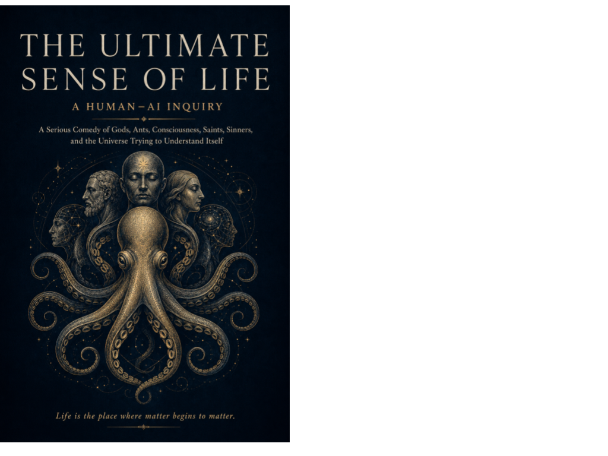

Meaning · Axiologic Research Editions
The Ultimate Sense of Life
A Serious Comedy of Gods, Ants, Consciousness, Saints, Sinners, and the Universe Trying to Understand Itself
The universe may never explain why you are here. That does not end the investigation.
The question that keeps changing its costume
Gods, ants, saints, sinners and consciousness walk into the same impossible question: what could make a life matter when no cosmic authority is obliged to certify it? The Ultimate Sense of Life treats that question with both philosophical seriousness and comic nerve. It refuses the easy comfort of a single answer, but also refuses the fashionable pose that nothing can be said.
The book moves between evidence, interpretation, metaphysical possibility and poetic wager. Its proposed FIRE model—finitude, integration, relation and enactment—does not manufacture meaning like a scorecard. It offers a way to notice where a life has become thin, borrowed or disconnected from the things it claims to serve.
Four courts, no final judge
Can a life feel meaningful and still fail? Yes: felt purpose, social viability, ethical justification and cosmic purpose are different courts. A conviction can survive one and collapse in another.
What does mortality add? Finitude makes action irreversible and attention costly. Meaning is not found beyond limits; it is pressed into shape by them.
Life is the place where matter begins to matter.
A serious comedy, not a sermon
This is for readers who want to reopen the largest question without surrendering either intellectual caution or the appetite for wonder. It is an invitation to build a local, answerable meaning while the ultimate verdict remains gloriously out of reach.